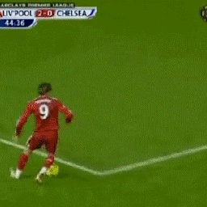

| Pasatiempos |
Descripción |
| Jugar futbol |
Todas las despues de abcabar mi tarea trato de ir a jugar futbol con mis amigos. |

|
| Pasear en bicicleta |
Todos los fines de semana si no tengo tarea salgo en las mañanas en mi bicicleta. |

|
| Jugar Videojuegos |
En las noches por lo menos 2 veces por semana juego videojuegos en mi celular, laptop o consola. |
|
| Nadar |
No lo ago muy seguido pero cada que puedo, disfruto mucho de ir a la alberca a nadar. |
|
| Jugar Voleibol |
Tiempo atras cunado estaba en la preoaratoria solia jugar diario, ahora solo lo ago de vez en cuando. |
|
| Disfruto fucho de hacer todas estas actividades y mas disfruto hacerlas en familia, y con amigos
tambien otras actividades que me gusta hacer es mis tiempos libres es jugar basebol, juegos de mesa, juegos de azar
entre otros.
|